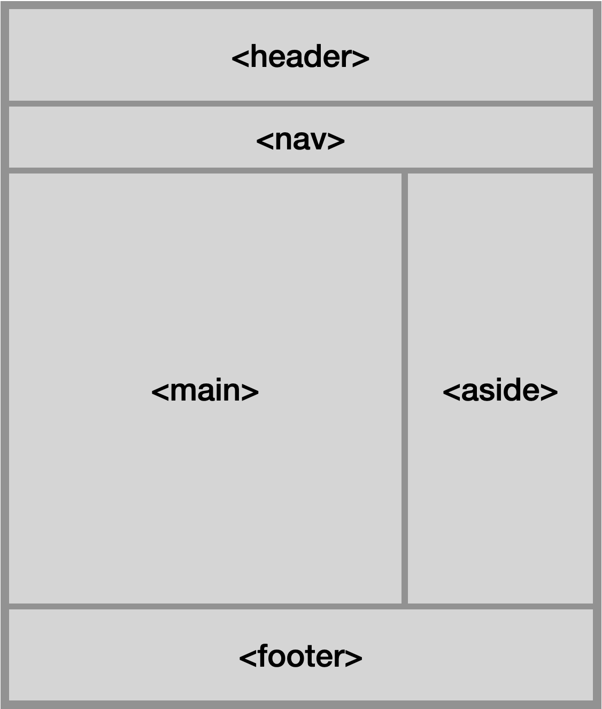

Voordat je een website helemaal afmaakt is het verstandig om een idee te hebben van hoe je zou willen dat je website eruit ziet.
Voor elke app die je maakt, is het verstandig om een ontwerp te maken. Het kan simpelweg gemaakt worden in een tekenprogramma,
of zelfs met de hand als je dat fijner vindt.

Hiernaast zie je een foto van een voorbeeld layout die je zou kunnen gebruiken, maar er zijn natuurlijk ook andere indelingen mogelijk.
HTML heeft een aantal tags die gebruikt kunnen worden om de opmaak van jouw website goed te krijgen.
De volgende tags zijn erg handig:
<header> | De kop van de website, hierin kan bijvoorbeeld een logo. |
<footer> | De onderkant van de website, hierin staan vaak contact gegevens. |
<nav> | De menubalk van de website, hiermee navigeer je over de site. |
<article> | Gebruikt om een stuk onafhankelijke inhoud weer te geven. |
Teken in paint, met draw.io of Powerpoint een schets van hoe jij een website zou willen gaan ontwerpen.
Hierboven staan nog twee extra voorbeelden. Voor meer inspiratie kun je ook googlen naar website layout.
Zorg dat er minstens een header, nav, article en footer aanwezig is.